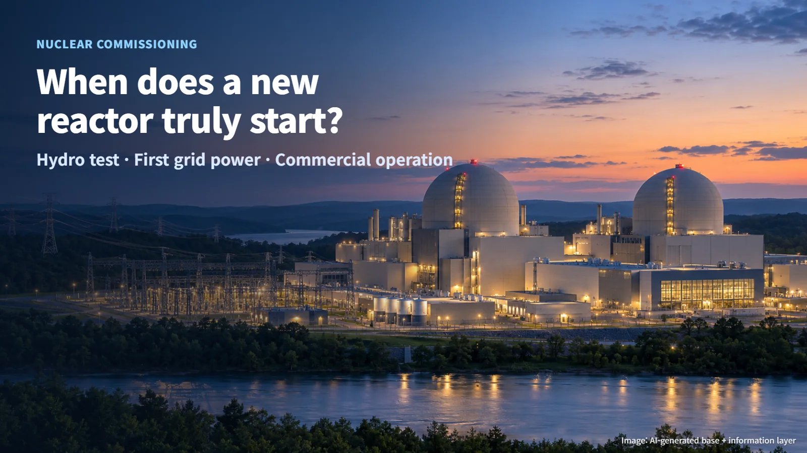
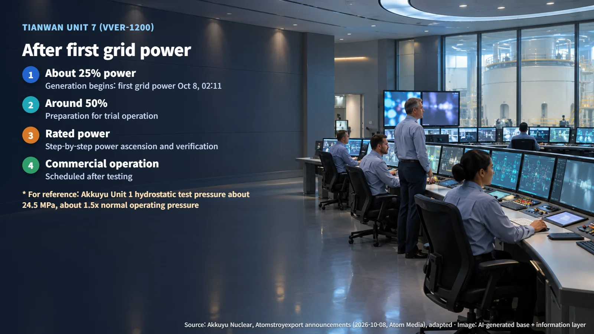

Türkiye & China · Reactor Commissioning
Hydrostatic Test, First Grid Power, Commercial Operation: The Milestones Before a New Reactor Truly Starts Up
On October 8, 2026, Akkuyu Unit 1 completed its hydrostatic test and Tianwan Unit 7 sent its first electricity to the grid: two VVER-1200 units on different steps of the road to commercial operation.
Follow the news about a new nuclear plant for a while and a puzzle appears. One headline says testing is complete. A few weeks later another says the plant has sent electricity to the grid for the first time. Later still, "commercial operation" shows up as a separate announcement. It is entirely reasonable to wonder which of these moments is the real start.
On October 8, 2026 alone, two such announcements arrived. Unit 1 at Akkuyu in Türkiye completed its hydrostatic test, and Unit 7 at Tianwan in China delivered electricity to the power grid for the first time. Both are VVER-1200 units, a Russian-designed pressurized water reactor, yet they stand on different steps of the same staircase. Placed side by side, the two announcements show clearly how a new reactor makes its way to full operation.

Akkuyu Unit 1: Proving the System Under Water Pressure
Akkuyu Nuclear announced on October 8 that it had successfully completed the hydrostatic test of the reactor primary circuit at Akkuyu Unit 1. The primary circuit is the closed loop in which coolant heated in the reactor flows through the steam generators and back to the reactor. The test covered the reactor, the main circulation pumps, the steam generators, the pressurizer (the component that holds system pressure steady) and the piping that connects them.
The test pressure was about 24.5 MPa, roughly 1.5 times the normal operating pressure, or about 240 times atmospheric pressure. Chemically demineralized water (water stripped of impurity ions) was filled into the system to set up the test conditions, and the primary circuit water reached 135°C early in the test. Operators monitored the condition of the equipment and piping from the main control room using readings from the automated process control system.
The idea is to apply more pressure than the plant will ever see in operation, on purpose, and confirm that everything holds. The operator stated that the system met the test criteria of the VVER-1200 design, and Rosatom described the result as confirmation of the quality of installation, welding and commissioning work and as progress toward physical startup. The Akkuyu project as a whole plans four units of the 1,200 MW class.
The hydrostatic test is the milestone that confirms the integrity of the pressure boundary, the wall that keeps the coolant contained. Fuel loading, criticality, first grid power and the start of commercial operation are the milestones that follow.
Tianwan Unit 7: First Electricity on the Grid, With More to Come
On the same day, Atomstroyexport, a Rosatom subsidiary, announced that Tianwan Unit 7, a VVER-1200 in China, supplied electricity to the power grid for the first time at 02:11 local time. The company said the systems operated in their designed operating mode.
At 2:11 in the morning, electricity made at this plant flowed into the grid for the first time. First grid power means that electricity generated by turning the turbine and generator with the reactor's heat has been connected to the real grid for the first time. In the commissioning sequence, it sits several steps above the hydrostatic test.
The journey continues from here. The announcement describes a power stage of about 25% for the start of generation and a subsequent preparation stage for trial operation at around 50%, followed by verification steps that raise output to rated power (the maximum continuous output the plant is designed for). First grid connection marks the start of power generation; reaching rated power and beginning commercial operation are separate stages that come after it.

Under cooperation agreements and contracts signed in 2018, the Russian side handled the design of the nuclear island (the area housing the reactor and its key systems) and the supply of major equipment and documentation for this unit, and it is also providing designer supervision, installation and commissioning technical support.
The Steps Still Ahead Before Commercial Operation
Placing the two units on the commissioning sequence makes their positions clear. Akkuyu Unit 1 has confirmed the integrity of its pressure boundary; fuel loading, criticality and first grid power are milestones it will confirm separately in the future. Tianwan Unit 7 has reached first grid power and is scheduled to move into commercial operation after step-by-step power ascension and testing.
Each step asks its own question, so each step is earned on its own results. The hydrostatic test asks, "Does it leak?" Criticality asks, "Can the chain reaction be controlled stably?" Power ascension testing asks, "Does it perform as designed at high output?" Commercial operation is the stage at which, after all of this verification, the plant takes on routine power supply.
The timing of the next steps for either unit was not included in these announcements. The most accurate way to follow them is to check each stage's test results and official announcements as they arrive.
So the next time you see a headline about a nuclear plant "starting up," it is worth asking first which step the story is about. The day pressure was proven with water, the day electricity first reached the grid, and the day routine power supply began all carry different meanings.